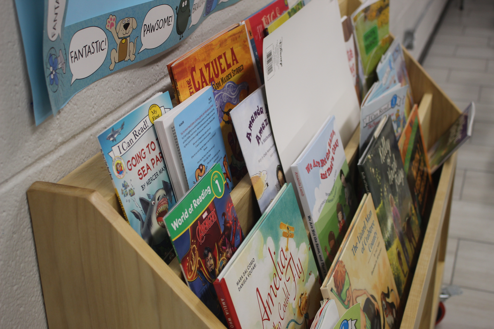

Empowering Your Child's Journey to Academic Success
Explore Tutoring ServicesThe mission of the Emanuel Learning Center is to provide one-on-one tutoring to students from the Hispanic community who could benefit from extra academic support. By focusing on skill development, using a strengths-based approach, and emphasizing the tutor-student relationship, we strive to create an environment that helps students fall in love with learning and develop greater confidence in their abilities.
The tutoring program at Iglesia Emanuel began in 2018. Realizing that their students were falling behind in the school system, parents were seeking additional support and encouragement for their children. Their academic needs increased even more during the pandemic, as school closures disproportionately affected Latinx and other minority students.
The Emanuel Learning Center has partnered with Duke Service Learning, various organizations at Duke, as well as local faith communities, to encourage volunteers to join the tutoring program. The dynamic between tutors and students brings much excitement to the program, and together, they create an effective learning environment that is joyful, flexible, and tailored to each student’s individual needs.
"Joining the Emanuel Learning Center has been a game-changer for my daughter. She's not only catching up academically but also developing a genuine love for learning. The staff's dedication is remarkable. Highly recommend!"
"Ever since my child joined the Emanuel Learning Center, her confidence and grades have soared. The tutors are incredible, making learning fun and impactful. A true blessing for our family!"
"The difference in my son’s attitude towards school since starting at Emanuel Learning Center is night and day. He's more engaged, enthusiastic, and his academic performance has dramatically improved. We're beyond thankful!"